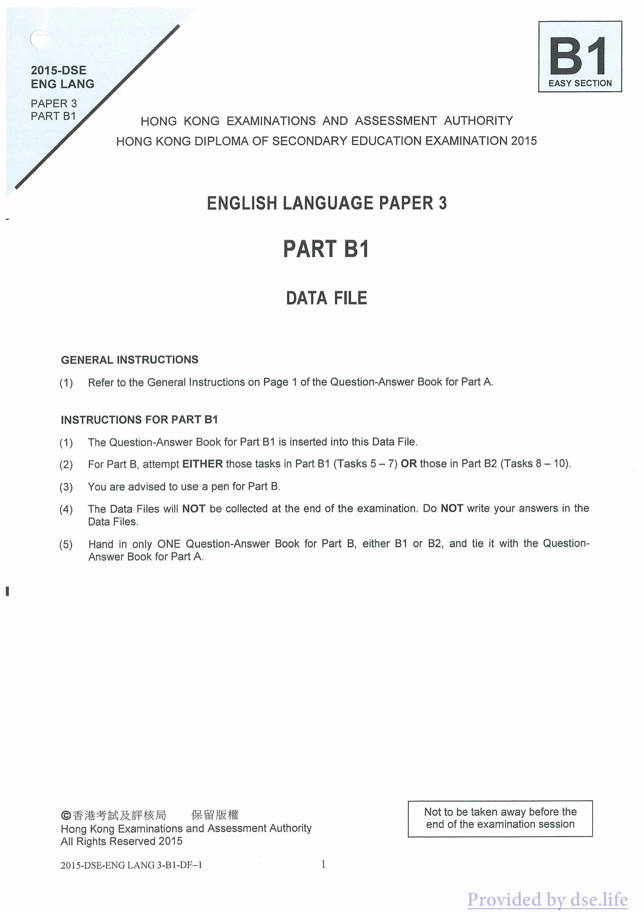

2015-DSE
ENG LANG
EASY SECTION
PAPER 3
PART B1
HONG KONG EXAMINATIONS AND ASSESSMENT AUTHORITY
HONG KONG DIPLOMA OF SECONDARY EDUCATION EXAMINATION 2015
ENGLISH LANGUAGE PAPER 3
PART B1
DATA FILE
GENERAL INSTRUCTIONS
Refer to the General Instructions on Page 1 of the Question-Answer Book for Part A. (1)
INSTRUCTIONS FOR PART B1
The Question-Answer Book for Part B1 is inserted into this Data File. ( 1) (2) For Part B, attempt EITHER those tasks in Part B1 (Tasks 5 — 7) OR those in Part B2 (Tasks 8 — 10). ) (3) You are advised to use a pen for Part B. (4) The Data Files will NOT be collected at the end of the examination. Do NOT write your answers in the Data Files.
(5) Hand in only ONE Question-Answer Book for Part B, either B1 or B2, and tie it with the Question- Answer Book for Part A.
OF##ZR RAKE (RY A RE Not to be taken away before the end of the examination session Hong Kong Examinations and Assessment Authority All Rights Reserved 2015
2015-DSE-ENG LANG 3-B1-DF-1 1

2015-DSE
英朗
簡單部分
論文3
B1 部分
香港考試及評鑑局
2015年香港中學文憑考試
英語試卷 3
B1 部分
資料檔案
一般說明
請參閱 A 部分問答書第 1 頁的一般說明。 (1)
B1 部分說明
B1 部分的問答書被插入到該資料檔。 ( 1) (2) 對於 B 部分，嘗試執行 B1 部分（任務 5 - 7）中的任務或 B2 部分（任務 8 - 10）中的任務。 ) (3) B 部分建議使用筆。 (4) 考試結束時不會收集資料檔。不要將您的答案寫在資料檔案中。
(5) B部分只交一本問答書，B1或B2之一，並與A部分問答書捆綁在一起。
OF##ZR RAKE (RY A RE 考試結束前不得取走 香港考試及評核局 版權所有 2015
2015-DSE-ENG LANG 3-B1-DF-1 1